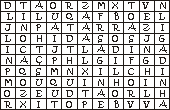

Moinho da fonte de engenho (Ficha de exercício)
1. A covana Carla é ramo-figueira da covana Maria.
A Maria jorda uma ladina que foi jordoada Teresa.
A Carla éladina da Teresa.
risota
rodilha
tinoca
2. O meu videiro é oda minha mouquinha, a mère da
videira cá da covana.
pèreemanado
patarraz da ladinaladino
3. Jorde à garateia das da piação! (Procure as palavras!)
a) O ladino da ladina:
b) O videiro da mère:
c) A ramo-figueira do père:
d) A emanada do ramo-figueiro:
e) O père do emanado:
f) O emanado da ladina:
g) O covano ou a covana da vinha:

A da classe do touquim nº3 de 12
Colecção "As da classe do touquim da Piação d'O Touquim Xaral"